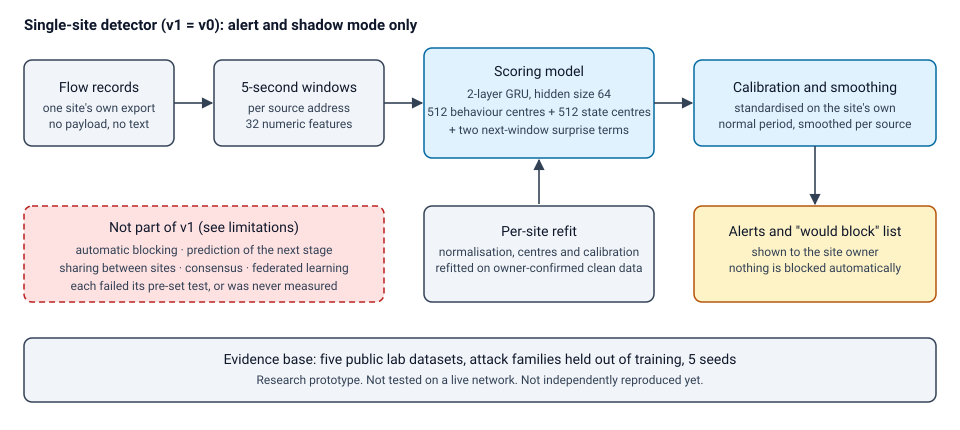
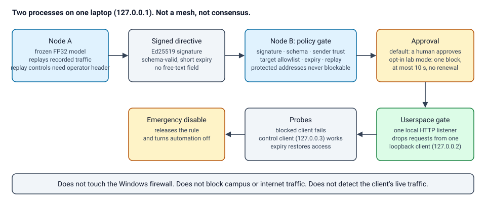
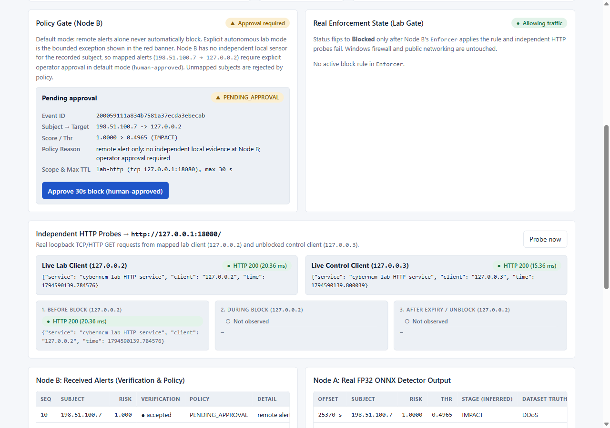
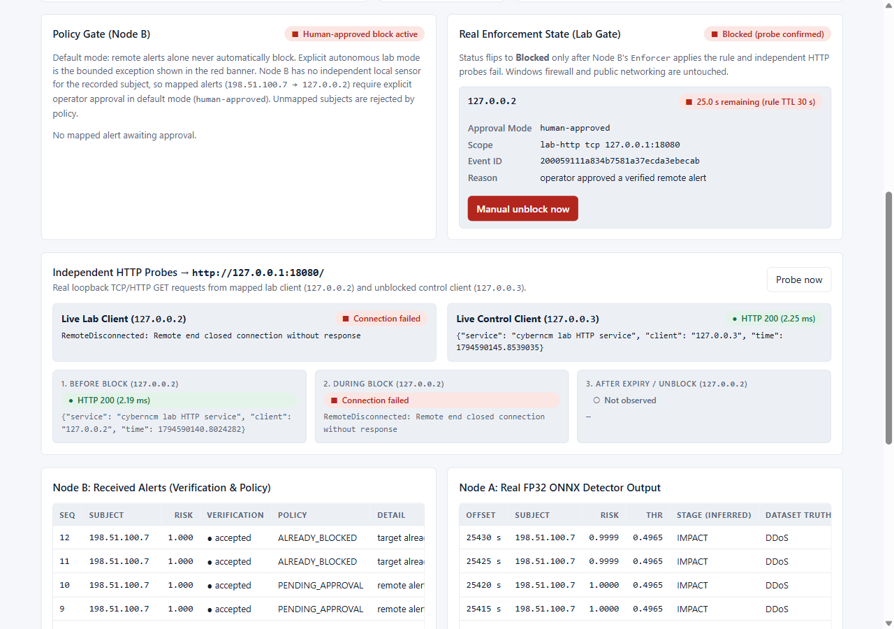
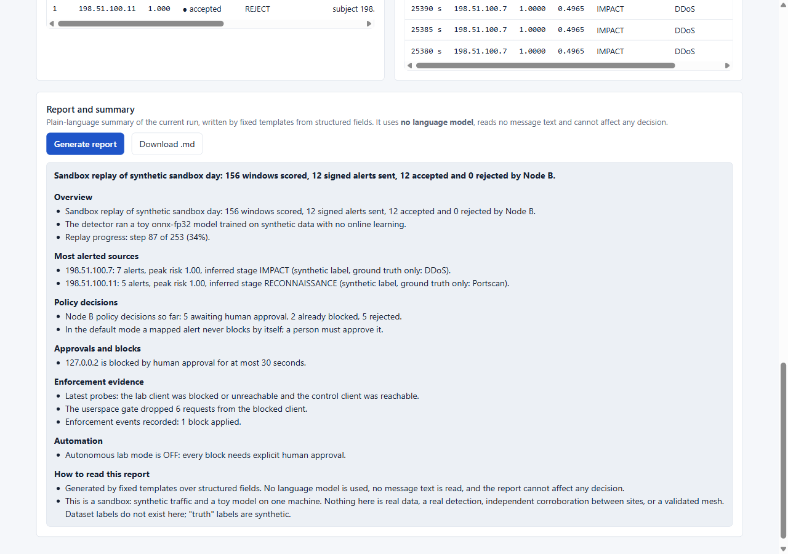

Can a firewall learn one site's normal behaviour, and spot what it has never seen?
CyberNCM studies an unsupervised detector, trained only on a site's normal traffic, that flags source addresses behaving unusually. The project also tested whether sites sharing blocks with each other would help. It did not, on this evidence, so version 1 is a single-site detector that alerts and shows what it would block.
Approach and architecture
Where "NCM" comes from
NCM stands for Next-Context Model. The idea is not new: learn what normally comes next from a source's benign history and treat what is surprising as suspicious. CyberNCM is our prototype of that agent, plus a test of every claim around it. The architecture report that proposed it is not included here, and none of its figures were reproduced or used: every number on this page comes from our own runs.
Learning from benign traffic only; a recurrent model over each source's recent windows; a vocabulary of 512 normal-behaviour tokens; signed, schema-valid messages with short expiry; shadow mode and human approval first.
Next-step surprise is kept only as two half-weight terms, because on its own it was the weakest and least stable signal. An
IMPACT stage was added for denial of service. Two-peer corroboration is not built.Predicting the next attack stage, sharing blocks between sites, and automatic blocking. Each failed its pre-set test or was never measured, so v1 does not claim them.
Flow records are cut into 5-second windows per source address. Each window is 32 numbers (counts, timing, TCP flag ratios, packet and byte statistics, fan-out); no payload and no text. A 2-layer GRU summarises each source's recent windows. The score combines the distance to the nearest of 512 learned "normal behaviour" centres, the distance of the GRU state to the nearest of 512 normal states, and two next-window surprise terms. It is standardised on the site's own normal period and smoothed per source.

The local two-node demonstration
Separately, a local demonstration shows how a signed directive could pass a policy gate before any block is applied. It runs two processes on one laptop, replays recorded traffic through a frozen FP32 model, and maps one recorded subject to a loopback client. It does not independently detect that client's live traffic, and two processes on one machine do not establish decentralised consensus or independent corroboration.

Research findings
Held-out attack families, mean of 5 seeds, on the later days of each dataset. AUC measures how well scores separate attack windows from normal ones; it is not a detection rate and not a statement about live performance. The bar marks the mean, the line the seed range.
| Dataset | Family-mean AUC (range) | Worst family | False alerts per benign host-day at 80% attackers caught in 5 min (FA80) |
|---|---|---|---|
| CIC-IDS2017 | 0.954 (0.942 to 0.966) | 0.861 | 12.1 |
| UNSW-NB15 | 0.942 (0.941 to 0.944) | 0.938 | 3.0 |
| CSE-CIC-IDS2018 (10% of sources) | 0.989 (0.988 to 0.991) | 0.982 | 0.24 |
| Unraveled (five-week campaign) | 0.894 (0.884 to 0.899) | 0.760 | 13.5 |
| CICAPT-IIoT (detection only) | 0.697 (0.637 to 0.756) | 0.654 | 8.7 |
How to read FA80. It is a retrospective, labelled evaluation metric: the threshold is chosen using the test split's own labels, so it is a best case, not a guaranteed operating point of a deployed system. It rests on 2 to 11 attacking sources per dataset.
What the evidence says
Unseen attack families are separable from one site's normal traffic on these lab datasets.
Refitting normalisation, centres and calibration on a new site's own normal traffic comes within 0.021 AUC of full retraining in six lab directions.
Automatic blocking: no alert policy reached 80% of attackers in 5 minutes with fewer than one false alert per host-day on the five-week campaign.
Prediction of the next attack stage: the attacker was flagged in the hour before only 1, 1 and 2 of 6 testable onsets.
Benefit from sharing blocks between sites: in simulation it sped the first block but spread false alerts, and a lying site was not stopped.
A poisoned learning period left 6 of 20 testable attack families undetected.
Research index
Every round in the repository is listed, including reduced, incomplete and negative ones. Evidence paths are inside the public repository.
| Round | Question | Dataset / scope | Method | Finding | Evidence | Limitations | Status |
|---|
Demo
Three ways to see how the two-node demo behaves, from most interactive to most real. All of it is static: there is no server and no account, and nothing leaves your browser.
1. Try it: an interactive browser simulation
This is the real dashboard page, driven by a simulator that runs in your browser. Press Start replay, wait for the alert (about 25 seconds), then press Approve to block the simulated lab client for at most 30 seconds. Tick autonomous lab mode to see the bounded automatic mode instead (one 10-second block, no renewal), and use Disable automation and unblock as the emergency switch. Generate report writes the plain-language summary. Everything is generated numbers: there is no model, no network and no real gate. It follows the demo's rules for illustration, and it says nothing about detection quality. Open it full screen.
2. Watch the real code run: a recording of a sandbox run
Below, the real Node A and Node B dashboard replays a recording of a real sandbox run: synthetic traffic, a toy model and documentation addresses only. It is a saved capture, not live: the controls are disabled and it loops. Press Generate report inside it to read the report saved with the frame being shown. The scores say nothing about detection quality, and the “dataset truth” column holds synthetic labels. Open it full screen. To run it yourself: cd demo/two_node && python run_sandbox.py --reset-state --autostart, then open http://127.0.0.1:18100.
Still images of the same kind of run (alert pending, block confirmed, report)



3. Run it yourself
The real two-node demo (Node A and Node B, one local HTTP listener) is in demo/two_node/. You can run it with no dataset using the sandbox: cd demo/two_node && python run_sandbox.py --reset-state --autostart, then open http://127.0.0.1:18100. It is not hosted here because it has operator controls and one shared state, and the free options that could host it are too small or not free.
Limitations, open questions and next steps
Team
Rohan Sai, Yuvashree C and Sonia C.
Licence, security contact and citation details are in the repository.